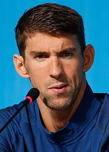

|
<<<<<<< HEAD
Principal
Estilos Olimpiadas ======= Principal Estilos Olimpiadas >>>>>>> 45650d7638ac1676af5aba130ba32e99ca19d774 |
Michael PhelpsMichael Fred Davo Phelps II es un exnadador estadounidense y el deportista olímpico más condecorado de todos los tiempos, con un total de 28 medallas.Phelps también posee los récords de más medallas olímpicas de oro (23), más medallas de oro en eventos individuales (13) y más medallas olímpicas en eventos masculinos y a menudo es considerado como el mejor atleta de todos los tiempos. En los Juegos Olímpicos de Pekín 2008, tras ganar ocho medallas de oro, Phelps se consagró como el máximo medallista de oro en una sola edición de los juegos. Cinco de esas medallas fueron en eventos individuales, igualando el récord de Eric Heiden y Vitaly Scherbo como múltiples medallistas de oro en eventos individuales en una sola edición. En los Juegos Olímpicos de Londres 2012, Phelps ganó cuatro medallas de oro y dos de plata, convirtiéndose en el deportista con más medallas de los juegos por tercera vez consecutiva. Phelps es el plusmarquista mundial en piscina larga de los 400 metros estilos, como también explusmarquista mundial de los 100 y 200 metros mariposa así como de los 200 metros libre y combinado. Ganó un total de 73 medallas en las grandes competiciones mundiales en piscina larga: 59 oros, 11 platas y 3 bronces, en lo que incluye Juegos Olímpicos, Campeonato Mundial y el Campeonato Pan-Pacífico. Los títulos y récords de Phelps le han permitido ser reconocido como Nadador del año en seis ocasiones y Nadador Americano del año en ocho ocasiones. Su actuación olímpica en 2008 le valió el premio Deportista del año otorgado por la revista Sports Illustrated. Es considerado el mejor nadador de todos los tiempos. Después de los Juegos Olímpicos de 2008, Phelps inició la Fundación Michael Phelps, concentrada en el desarrollo de la natación y promoviendo estilos de vida saludables.  Si quiere saber más presione los siguientes links <<<<<<< HEAD Primeros años Trayectoria ======= Primeros años Trayectoria >>>>>>> 45650d7638ac1676af5aba130ba32e99ca19d774 |